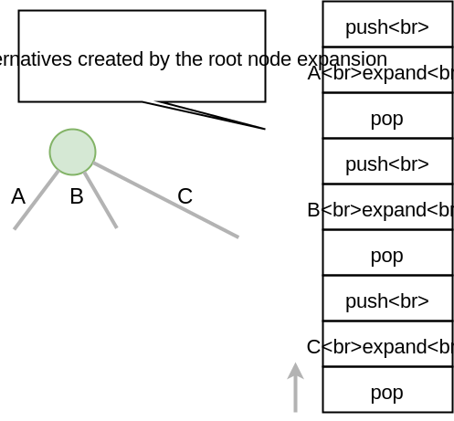
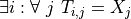
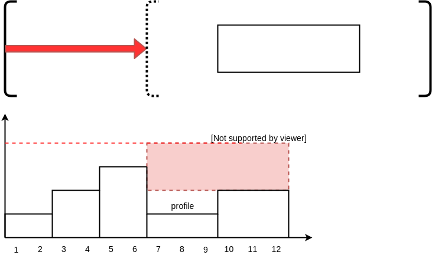

Exercises¶
We propose a set of exercises to extend mini-cp with useful features. By doing these exercises you will gradually progress in your understanding of CP. For each exercise, we ask you to implement JUnit tests to make sure that your implementation works as expected. If you don’t test each feature independently you take the risk to loose a lot of time finding very difficult bugs.
We ask you not to publish your solutions on a public repository. The instructors interested to get the source-code of the solutions can contact us.
Learning Outcomes¶
Be able to
Understand reversible data structures
Understand a domain
Implement global constraints
Implement custom search
Model CP easy problems
Use LNS
Write unit-tests for constraints and models
Debug constraints, models, etc
Theoretical Exercises¶
Some theoretical quizz
Less or equal reified constraint¶
Implement IsLessOrEqual.java
This is a reified constraint for b iff x <= v that is boolean variable b is set true if and only if x variable is less or equal to value v.
For example the constraint holds for
b = true , x = 4, v = 5
b = false, x = 4, v = 2
but is violated for
b = true , x = 5, v = 4
b = false, x = 2, v = 4
Check that your implementation passes the tests IsLessOrEqualTest.java
DFS Explicit Stack¶
The search algorithm of mini-cp is depth-first-search. It is implemented using a recursive method in the class DFSSearch.java. To avoid any stack-overflow exception due to too a deep recursion in Java we ask you to reimplement the depth-first-search with an explicit stack of instead of relying on the recursion call stack.
Consider the following search tree where alternatives to execute are represented as letters.

A DFS exploration should executes the alternative in the following order A->D->E->B->C->F->G. On backtrack, the state should be restored and therefore these successive executions of the alternatives should be interleaved with ‘push’ and ‘pop’ operations on the trail. For instance a valid sequence for restoring the states on backtrack is the following: push->A->push->D->pop->push->E->pop->pop->push->B->pop->push->C->push->F->pop->push->G->pop->pop. The push operations are executed in pre-order fashion while the pop operations are executed in a post-order fashion. This is highlighted in the recursive dfs code given next.
private void dfs(SearchStatistics statistics, SearchLimit limit) {
if (limit.stopSearch(statistics)) throw new StopSearchException();
Alternative [] alternatives = choice.call(); // generate the alternatives
if (alternatives.length == 0) {
statistics.nSolutions++;
notifySolutionFound();
}
else {
for (Alternative alt : alternatives) {
state.push(); // pre-order
try {
statistics.nNodes++;
alt.call(); // call the alternative
dfs(statistics,limit);
} catch (InconsistencyException e) {
notifyFailure();
statistics.nFailures++;
}
state.pop(); // post-order
}
}
}
A skeletton of solution is given next but you don’t have to follow exactly this solution since there are many ways to implement it.
private void dfs(SearchStatistics statistics, SearchLimit limit) {
Stack<Alternative> alternatives = new Stack<Alternative>();
expandNode(alternatives,statistics); // root expension
while (!alternatives.isEmpty()) {
if (limit.stopSearch(statistics)) throw new StopSearchException();
try {
alternatives.pop().call();
} catch (InconsistencyException e) {
notifyFailure();
statistics.nFailures++;
}
}
}
private void expandNode(Stack<Alternative> alternatives, SearchStatistics statistics) {
// TODO
}
The idea of this solution is wrap the push/pop/alternative execution inside Alternative closure objects as illustrated on the next figure showing the stack after the root node expansion at line 3.
Check that your implementation passes the tests DFSearchTest.java
Remark (optional): It is actually possible to reduce the number of operations on the trail by skipping the push on a last branch at a given node. The sequence of operations becomes push->push->A->push->D->pop->E->pop->push->B->pop->C->push->F->pop->G->pop.
Domain with an arbitrary set of values¶
Implement the missing constructor in IntVarImpl.java
public IntVarImpl(Solver cp, Set<Integer> values) {
throw new NotImplementedException();
}
This exercise is straightforward: just create a dense domain then remove the values not present in the set.
Check that your implementation passes the tests IntVarTest.java
Implement a domain iterator¶
Many filtering algorithms require to iterate over the values of a domain. The fillArray method from ReversibleSparseSet.java allows to fill an array with all the values present in the sparse-set relying on the very efficient ‘System.arraycopy’.
/**
* set the first values of <code>dest</code> to the ones
* present in the set
* @param dest, an array large enough dest.length >= getSize()
* @return the size of the set
*/
public int fillArray(int [] dest) {
int s = size.getValue();
System.arraycopy(values, 0, dest, 0, s);
return s;
}
The main advantage over the iterator mechanism is that not object is created (and thus garbage collected). Indeed dest is typically a container array stored as an instance variable and reused many times. This is important for efficiency to avoid creating objects on the heap at each execution of a propagator. Never forget that a ‘propagate()’ method of ‘Constraint’ may be called thousands of times per second. This implementation using fillArray avoids the ConcurrentModificationException discussion when implementing an Iterator: should we allow to modify a domain while iterating on it ? The answer here is very clear: you get a snapshot of the domain at the time of the call to fillArray and you can thus safely iterate over this dest array and modifying the domain at the same time.
To do:
Implement public int fillArray(int [] dest) in IntVarImpl.java.
Check that your implementation passes the tests IntVarTest.java add also add more tests.
Implement a Custom Search¶
Modify the Quadratic Assignment Model QAP.java to implement a custom search strategy. A skeleton for a custom search is the following one:
DFSearch dfs = makeDfs(cp,
selectMin(x,
x -> x.getSize() > 1, // filter
x -> x.getSize(), // variable selector
xi -> {
int v = xi.getMin(); // value selector (TODO)
return branch(() -> equal(xi,v),
() -> notEqual(xi,v));
}
));
As a variable heuristic, select the unbound variable x[i] (a facility i not yet assigned to a location) that has a maximum weight w[i][j] with another facility j (x[j] may be bound or not).
As a value heuristic, on the left branch, place this facility to on the location which is the closest possible to another location possible for facility j. On the right branch remove this value.
Hint: selectMin is a generic method parameterized by ‘T’. To implement this heuristic, adding pairs (i,j) as a type for T is probably the easiest way to go.
public static <T> Choice selectMin(T[] x, Filter<T> p, ValueFun<T> f, BranchOn<T> body)
Experiment and modify LNS¶
Experiment the Quadratic Assignment Model with LNS QAPLNS.java
Does it converge faster to good solutions than the standard DFS ? Use the larger instance with 25 facilities.
What is the impact of the percentage of variables relaxed (experiment with 5, 10 and 20%) ?
What is the impact of the failure limit (experiment with 50, 100 and 1000)?
Which parameter setting work best? How would you choose it?
Imagine a different relaxation specific for this problem. Try to relax the decision variables that have the strongest impact on the objective (the relaxed variables should still be somehow randomized). You can for instance compute for each facility $i$: $sum_j d[x[i]][x[j]]*w[i][j]$ and base your decision to relax or not a facilities on those values.
Element constraint¶
Implement Element1D.java
An element constraint is to index an array T by an index variable x and link the result with a variable z. More exactly the relation T[x]=z must hold.
Assuming T=[1,3,5,7,3], the constraint holds for
x = 1, z = 3
x = 3, z = 7
but is violated for
x = 0, z = 2
x = 3, z = 3
Check that your implementation passes the tests Element1DTest.java
Two possibilities:
extends Element2D and reformulate Element1D as an Element2D constraint in super call of the constructor.
implement a dedicated algo (propagate, etc) for Element1D by taking inspiration from Element2D.
Does your filtering achieve domain-consistency on D(Z)? Implement a domain-consistent version, write tests to make sure it is domain consistent.
Circuit Constraint¶
The circuit constraint enforces an hamiltonian circuit on a successor array. On the next example the successor array is [2,4,1,5,3,0]

All the successors must be different. but enforcing the allDifferent constraint is not enough. We must also guarantee it forms a proper circuit (without sub-tours). This can be done efficiently and incrementally by keeping track of the sub-chains appearing during the search. The data-structure for the sub-chains should be a reversible. Our instance variables used to keep track of the sub-chains are:
IntVar [] x;
ReversibleInt [] dest;
ReversibleInt [] orig;
ReversibleInt [] lengthToDest;
dest[i] is the furthest node we can reach from node i following the instantiated edges.
orig[i] is the furthest node we can reach from node i following instantiated edges in reverse direction.
lengthToDest[i] is the number of instantiated edges on the path from node i to dest[i].
Consider the following example with instantiated edges colored in grey.

Before the addition of the green link we have
dest = [2,1,2,5,5,5];
orig = [0,1,0,4,4,4];
lengthToDest = [1,0,0,1,2,0];
After the addition of the green link we have
dest = [2,1,2,2,2,2];
orig = [4,1,4,4,4,4];
lengthToDest = [1,0,0,3,4,2];
In your implementation you must update the reversible integers to reflect the change after the addition of every new edge. You can use the CPIntVar.whenBind(…) method for that.
The filtering in itself consists in preventing to close a sub-tour that would have a length less than n (the number of nodes). Since node 4 has a length to destination (node 2) of 4 (<6), the destination node 2 can not have 4 as successor and the red link is deleted. This filtering was introduced in [TSP1998] for solving the TSP with CP.
Implement Circuit.java.
Check that your implementation passes the tests CircuitTest.java.
- TSP1998
Pesant, G., Gendreau, M., Potvin, J. Y., & Rousseau, J. M. (1998). An exact constraint logic programming algorithm for the traveling salesman problem with time windows. Transportation Science, 32(1), 12-29.
Custom search strategy¶
Modify TSP.java to implement a custom search strategy. A skeleton is the following one:
DFSearch dfs = makeDfs(cp,
selectMin(succ,
succi -> succi.getSize() > 1, // filter
succi -> succi.getSize(), // variable selector
succi -> {
int v = succi.getMin(); // value selector (TODO)
return branch(() -> equal(succi,v),
() -> notEqual(succi,v));
}
));
The unbound variable selected is one with smallest domain (first-fail).
It is then assigned the minimum value in the domain.
This value selection strategy is not well suited for the TSP (and VRP). The one you design should be more similar to the decision you would make manually in a greedy fashion. For instance you can select as a successor for succi the closest city in the domain.
Hint: Since there is no iterator on the domain of a variable, you can iterate from the minimum value to the maximum one using a for loop and check if it is in the domain with the contains method.
You can also implement a min-regret variable selection strategy. It selects the variable with the largest different between the closest successor city and the second closest one. The idea is that it is critical to decide the successor for this city first because otherwise you will regret it the most.
Observe the first solution obtained and its objective value ? Is it better than the naive first fail ? Also observe the time and number of backtracks necessary for proving optimality. By how much did you reduce the computation time ?
LNS¶
Modify further TSP.java to implement a LNS search. Use the larger 17x17 distance matrix for this exercise.
What you should do:
Record the assignment of the current best solution. Hint: use the onSolution call-back on the DFSearch object.
Implement a restart strategy fixing randomly ‘10%’ of the variables to their value in the current best solution.
Each restart has a failure limit of 100 backtracks.
An example of LNS search is given in QAPLNS.java. You can simply copy/paste/modify this implementation for the TSP.
Does it converge faster to good solutions than the standard DFS ? What is the impact of the percentage of variables relaxed (experiment with 5, 10 and 20%) ? What is the impact of the failure limit (experiment with 50, 100 and 1000)? Which parameter setting work best? How would you choose it?
Table Constraint¶
The table constraint (also called extension constraint) specify the list of solutions (tuples) assignable to a vector of variables.
More precisely, given an array X containing n variables, and an array T of size m*n, this constraint holds:

That is, each line of the table is a valid assignment to X.
Here is an example of a table, with five tuples and four variables:
Tuple index |
X[0] |
X[1] |
X[2] |
X[3] |
|---|---|---|---|---|
1 |
0 |
1 |
2 |
3 |
2 |
0 |
0 |
3 |
2 |
3 |
2 |
1 |
0 |
3 |
4 |
3 |
2 |
1 |
2 |
5 |
3 |
0 |
1 |
1 |
In this particular example, the assignment X={2, 1, 0, 3} is then valid, but not X={4, 3, 3, 3} as there are no such line in the table.
Many algorithms exists to filter table constraints.
One of the fastest filtering algorithm nowadays is Compact Table (CT) [CT2016]. In this exercise you’ll implement a simple version of CT.
CT works in two steps:
Compute the list of supported tuples. A tuple T[i] is supported if, for each element j of the tuple,
the domain of the variable X[j] contains the value T[i][j].
Filter the domains. For each variable x[j] and value v in its
domain, the value v can be removed if it’s not used by any supported tuple.
Your task is to terminate the implementation in TableCT.java.
TableCT maintains for each pair variable/value the set of tuples the pair maintains as an array of bitsets:
private BitSet[][] supports;
where supports[j][v] is the (bit)set of supported tuples for the assignment x[j]=v.
Example¶
As an example, consider that variable x[0] has domain {0, 1, 3}. Here are some values for supports: supports[0][0] = {1, 2} supports[0][1] = {} supports[0][3] = {4,5}
We can infer two things from this example: first, value 1 does not support any tuples, so it can be removed safely from the domain of x[0]. Moreover, the tuples supported by x[0] is the union of the tuples supported by its values; we immediately see that tuple 3 is not supported by x[0] and can be discarded from further calculations.
If we push the example further, and we say that variable x[2] has domain {0, 1}, we immediately see that tuples 1 and 2 are not supported by variable x[2], and, as such, can be discarded. From this, we can infer that the value 0 can be removed from variable x[0] as they don’t support any tuple anymore.
Using bit sets¶
You may have assumed that the type of supports would have been List<Integer>[][] supportedByVarVal. This is not the solution used by CT.
CT uses the concept of bit sets. A bit set is an array-like data structure that stores bits. Each bit is accessible by its index. A bitset is in fact composed of an array of Long, that we call in this context a word. Each of these words store 64 bits from the bitset.
Using this structures is convenient for our goal:
Each supported tuple is encoded as a 1 in the bitset. 0 encodes unsupported tuples. In the traditional list/array representation, each supported tuple would have taken 32 bits to be represented.
Doing intersection and union of bit sets (and these are the main operation that will be made on supportedByVarVal) is very easy, thanks to the usage of bitwise operators included in all modern CPUs.
Java provides a default implementation of bit sets in the class BitSet, that we will use in this exercise. We encourage you to read its documentation before going on.
A basic implementation¶
You will implement a version of CT that makes no use of the reversible structure (therefore it is probably much less efficient that the real CT algo).
You have to implement the propagate() method of the class TableCT. All class variables have already been initialized for you.
You “simply” have to compute, for each call to propagate():
The tuples supported by each variable, which are the union of the tuples supported by the value in the domain of the variable
The intersection of the tuples supported by each variable is the set of globally supported tuples
You can now intersect the set of globally supported tuples with each variable/value pair in supports. If the value supports no tuple (i.e. the intersection is empty) then it can be removed.
Make sure you pass all the tests TableTest.java.
- CT2016
Demeulenaere, J., Hartert, R., Lecoutre, C., Perez, G., Perron, L., Régin, J. C., & Schaus, P. (2016, September). Compact-table: Efficiently filtering table constraints with reversible sparse bit-sets. In International Conference on Principles and Practice of Constraint Programming (pp. 207-223). Springer.
Sequencer Combinator¶
Sometimes we wish to branch on a given order on two families of variables, say x[] and then y[] as show on the next picture. A variable in y should not be branched on before all the variables in x have been decided. Furthermore, we may want to apply a specific heuristic on x which is different from the heuristic we want to apply on y variables.
This can be achieved as follows
IntVar [] x;
IntVar [] y;
makeDfs(and(firstFail(x),firstFail(y)))
The and factory method creates a Sequencer.java. You must complete its implementation.
Eternity Problem¶
Fill in all the gaps in order to solve the Eternity II problem.
Your task is to terminate the implementation in Eternity.java.
Create the table
Model the problem using table constraints
Search for a feasible solution using branching combinators
Element constraint with array of variables¶
Implement Element1DVar.java
We have already seen the element constraint to index an array of integers T by an index variable x and link the result with a variable z: T[x]=z. This time the constraint more general since T is an array of variables.
We ask you to imagine and implement the filtering algorithm for Element1DVar constraint. This filtering algorithm is not trivial, at least if you want to do it efficiently. Two directions of implementation are
The domain consistent version
The hybrid domain-bound consistent one, assuming the domain of z is a full range but not the domain of x in which you can create holes (you can start with this one, easier than the full domain consistent one).
Check that your implementation passes the tests Element1DVarTest.java Those tests are not checking that the filtering is domain-consistent. Write additional tests to check the domain consistency.
The stable mariage problem¶
Complete the partial model StableMariage.java This model makes use of the Element1DVar constraint you have just implemented and is also a good example of manipulation of logical and reified constraints. Check that you discover the 6 solutions.
The absolute value constraint¶
Implement Absolute.java
Again you will realize that several directions of implementation are possible
The full domain consistent version
An hybrid domain-bound consistent one
Check that your implementation passes the tests AbsoluteTest.java
The maximum constraint¶
Implement Maximum.java
Implement a bound-consistent filtering algorithm
Check that your implementation passes the tests MaximumTest.java
Compact table algorithm for table constraints with short tuples¶
Implement ShortTableCT.java
Of course you should get a strong inspiration from the TableCT.java implementation you did in a previous exercise.
Check that your implementation passes the tests ShortTableTest.java
Compact table algorithm for negative table constraints¶
Implement NegTableCT.java
Of course you should get a strong inspiration from the TableCT.java implementation you did in a previous exercise.
Check that your implementation passes the tests NegTableTest.java
Cumulative Constraint: Decomposition¶
The Cumulative constraint models a scheduling resource with fixed capacity. It has the following signature:
public Cumulative(IntVar[] start, int[] duration, int[] demand, int capa)
where capa is the capacity of the resource and start, duration, and demand are arrays of the same size and represents properties of activities:
start[i] is the variable specifying the start time of activity i
duration[i] is the duration of activity i
demand[i] is the resource consumption or demand of activity i
The constraint ensures that the cumulative consumption of activities (also called consumption profile) at any time is below a given capacity:
The next visual example depicts three activities and their corresponding consumption profile. As it can be observed, the profile never exceeds the capacity 4.

It corresponds to the instantiation of the Cumulative constraint:
Cumulative(start = [ 1, 2, 3], duration = [8, 3, 3], demand = [1, 2, 2], capa = 4)
Implement CumulativeDecomp.java. This is a decomposition or reformulation of the cumulative constraint in terms of simple arithmetic and logical constraints as used in the above equation to describe its semantic.
At any time t of the horizon a BoolVar overlaps[i] tells whether activity i overlaps time t or not. Then the overall consumption in t is obtained by:
First make sure you understand the following code, then add the few lines in the TODO to make sure overlaps has the intended meaning.
public void post() throws InconsistencyException {
int min = Arrays.stream(start).map(s -> s.getMin()).min(Integer::compare).get();
int max = Arrays.stream(end).map(e -> e.getMax()).max(Integer::compare).get();
for (int t = min; t < max; t++) {
BoolVar[] overlaps = new BoolVar[start.length];
for (int i = 0; i < start.length; i++) {
overlaps[i] = makeBoolVar(cp);
// TODO
// post the constraints to enforce
// that overlaps[i] is true iff start[i] <= t && t < start[i] + duration[i]
// hint: use IsLessOrEqual, introduce BoolVar, use views minus, plus, etc.
// logical constraints (such as logical and can be modeled with sum)
}
IntVar[] overlapHeights = makeIntVarArray(cp, start.length, i -> mul(overlaps[i], demand[i]));
IntVar cumHeight = sum(overlapHeights);
cumHeight.removeAbove(capa);
}
Check that your implementation passes the tests CumulativeDecompTest.java.
Cumulative Constraint: Time-Table filtering¶
The Cumulative and Time-Table Filtering introduced in [TT2015] is an efficient yet simple filtering for Cumulative.
It is a two stage algorithm:
Build an optimistic profile of the resource consumption and check it does not exceed the capacity.
Filter the earliest start of the activities such that they are not in conflict with the profile.
Consider on the next example the depicted activity that can be executed anywhere between the two brackets. It can not execute at its earliest start since this would violate the capacity of the resource. We thus need to push the activity up until we find a time where it can execute over its entire duration without being in conflict with the profile and the capacity. The earliest time is 7.
Profiles
We provide a class Profile.java that is able to build efficiently a resource profile given an array of rectangles in input. A rectangle has three attributes: start, end, height as shown next:

A profile is nothing else than a sequence of rectangles. An example of profile is given next. It is built from three input rectangles provided to the constructor of Profile.java. The profile consists in 7 contiguous rectangles. The first rectangle R0 starts at Integer.MIN_VALUE with a height of zero and the last rectangle R6 ends in Integer.MAX_VALUE also with a height of zero. These two dummy rectangles are convenient because they guarantee the property that any time point falls on one rectangle of the profile.
Make sure you understand how to build and manipulate Profile.java.
Have a quick look at ProfileTest.java for some examples of profile construction.
Filtering
Implement Cumulative.java. You have three TODO tasks:
Build the optimistic profile from the mandatory parts.
Check that the profile is not exceeding the capacity.
Filter the earliest start of activities.
TODO 1 is to build the optimistic profile from the mandatory parts of the activities. As can be seen on the next visual example, a mandatory part of an activity is a part that is always executed whatever will be the start time of the activity on its current domain. It is the rectangle starting at start[i].getMax() that ends in start[i].getMin()+duration() with a height equal to the demand of the activity. Be careful because not every activity has a mandatory part.

TODO 2 is to check that the profile is not exceeding the capacity. You can check that each rectangle of the profile is not exceeding the capacity otherwise you throw an InconsitencyException.
TODO 3 is to filter the earliest start of unbound activities by pushing each activity (if needed) to the earliest slot when it can be executed without violating the capacity threshold.
for (int i = 0; i < start.length; i++) {
if (!start[i].isBound()) {
// j is the index of the profile rectangle overlapping t
int j = profile.rectangleIndex(start[i].getMin());
// TODO 3: push i to the right
// hint:
// You need to check that at every-point on the interval
// [start[i].getMin() ... start[i].getMin()+duration[i]-1] there is enough space.
// You may have to look-ahead on the next profile rectangle(s)
// Be careful that the activity you are currently pushing may have contributed to the profile.
}
}
Check that your implementation passes the tests CumulativeTest.java.
- TT2015
Gay, S., Hartert, R., & Schaus, P. (2015, August). Simple and scalable time-table filtering for the cumulative constraint. In International Conference on Principles and Practice of Constraint Programming (pp. 149-157). Springer.
The Resource-Constrained Project Scheduling Problem (RCPSP)¶
A set of activities must be executed on a set of resources.
Fill in all the gaps in order to solve the RCPSP problem.
Your task is to terminate the implementation in RCPSP.java.
Create the cumulative constraint
Post the precedence constraint
Add instructions to minimize the makespan
Minimize the makespan
Several instance of increasing sizes are available with 30,60,90 and 120 activities.
In order to test your model, the instance j30_1_1.rcp should have a minimum makespan of 43.
Don’t expect to prove optimality for large size instances but you should reach it easily for 30 activities.
The JobShop Problem and disjunctive resource¶
Your task is to make the disjunctive constraint more efficient than using the cumulative constraint with unary capacity.
Implement the constraint IsLessOrEqualVar.java for the reification b iff x <= y. This one will be useful implementing the decomposition for the disjunctive constraint..
Test your implementation in IsLessOrEqualVarTest.java.
Implement the decompostion with reified constraint for the Disjunctive.java. `
Test if (as expected) this decomposition prunes more than the formulation with the TimeTable filtering for the cumulative constraint. Observe on the JobShop.java problem if the number of backtracks is reduced with the decomposition instead of the formulation with the cumulative. Test for instance on the small instance data/jobshop/sascha/jobshop-4-4-2 with 4 jobs, 4 machines, 16 activities.
Read and make sure you understand the implementation ThetaTree.java. Some unit-tests are implemented in ThetaTreeTest.java. To make sure you understand it, add a unit-test with 4 activities and compare the results with a manual computation.
The overlad-checker, detectable precedences, not-first, edge-finding only filter one side of the activities. To get the symmetrical filtering implement the mirroring activities trick similarly to Cumulative.java.
Implement the overload-checker in Disjunctive.java
The overload-checker should already make a big difference to prune the search tree. Make sure that larger-job-shop instances are now accessible for instance the data/jobshop/sascha/jobshop-6-6-0 should now become easy to solve.
Implement the detectable-precedence in Disjunctive.java
Implement the not-first-not last in Disjunctive.java
Make sure you pass the tests DisjunctiveTest.java
(optional for a bonus) Implement the edge-finding in Disjunctive.java (you will also need to implement the ThetaLambdaTree data-structure).
The logical or constraint and watched literals¶
Implement the constraint Or.java for modeling the logical clause constraint: (x[0] or x[1] or x[2] … x[n-1]).
Test your implementation in OrTest.java.
The implementation should use the watched literals technique.
A reminder about the watched literals technique:
The constraint should only listen to the changes of two unbound variables with propagateOnBind(this)
and dynamically listen to other ones whenever of these two become bound. Keep in mind that any call to x[i].propagateOnBind(this) has a reversible effect on backtrack.
Why two ? Because as long as there is one unbound one, the constraint is still satisfiable and nothing need to be propagated and whenever it is detected that only one is unbound and all the other ones are set to false, the last one must be set to true (this is called unit propagation in sat-solvers).
The two unbound variables should be at indexes wL (watched left) and wR (watched right). As depicted below wL (wR) is the left (right) most unbound variable.
Those indices are store in ReversibleInt such that they can only increase during search (incrementality).
When propagate is called, it means that one of the two watched variable is bound (x[wL] or x[wR]) and consequently the two pointers must be updated.
If during the update a variable bound to true is detected, the constraint can be deactivated since it will always be satisfied.
The logical reified or constraint¶
Implement the constraint IsOr.java for modeling the logical clause constraint: b iff (x[0] or x[1] or x[2] … x[n-1]).
Test your implementation in IsOrTest.java.
In case b is true, you can post your previous Or constraint
(create it once and forall and post it when needed to avoid creating objects during search that would trigger Garbage Collection).
Steel Mill Slab Problem: Modeling, redundant constraints and symmetry breaking¶
A number of TODO must be completed in Steel.java that will gradually improve the performance for solving this problem optimally.
Model the objective function computing the total loss to be minimized. You should use element constraints to compute the loss in each slab. The precomputed array loss gives for each load (index) the loss that would be induced. It is precomputed as the difference between the smallest capacity that can accommodate the load and the load value. A sum constraint constraint can then be used to compute the total loss.
Model a boolean variable reflecting the presence or not of each color in each slab. The color is present if at least one order with such color is present. The IsOr constraint previously implemented can be used for that.
Restrict the number of colors present in slab j to be <= 2. Your model can now be run, although it will not be able to solve optimally yet the easiest instance data/steel/bench_20_0.
Add a redundant constraint for the bin-packing stating that sum of the loads is equal to the sum of elements. Do you observe an improvement in the solving complexity ?
Add static symmetry breaking constraint. Two possibilities: the load of slabs must be decreasing or the losses must be decreasing. Do you observe an improvement in the solving complexity ?
Implement a dynamic symmetry breaking during search. Select an order x representing the slab where this order is placed. Assume that the maximum index of a slab containing an order is m. Then create m+1 branches with x=0,x=1,…,x=m,x=m+1 since all the decisions x=m+2,x=m+3 … would subproblems symmetrical with x=m+1. You should now be able to solve optimally the instance ‘data/steel/bench_20_0’ reaching a zero loss solution.
GAC filtering for the AllDifferent Constraint¶
The objective here is to implement the filtering algorithm described in [REGIN94] to remove every impossible value for the AllDifferent constraint (Arc-Consistency). More precisely you must:
Implement the constraint AllDifferentAC.java.
Test your implementation in AllDifferentACTest.java.
Régin’s algorithm proceeds in four steps described in the following figure.

It computes an initial maximum matching in the variable value graph for the consistency test.
It build an oriented graph. Matched edges from right to left, un matched edge from left to right. There is also one dummy node with in-comming edges from unmatched value nodes, and out-going edges toward matched value nodes.
It computes strongly connected components.
Any edge that is not in the initial maximum matching and connects two nodes from different components is removed.
The two main algorithmic building blocks are provided.
MaximumMatching.java is a class that computes a maximum matching given an array of variables. Instantiate this class once and for all in the constructor then you should simply call compute in the propagate method.
GraphUtil.java contains a static method with signature public static int[] stronglyConnectedComponents(Graph graph) to compute strongly connected components. The returned array gives from each node, the connected component id.
One of the main difficulty of this exercise is to implement the Graph interface to represent the residual graph of the maximum matching.
public static interface Graph {
/* the number of nodes in this graph */
int n();
/* incoming nodes ids incident to node idx */
Iterable<Integer> in(int idx);
/* outgoing nodes ids incident to node idx */
Iterable<Integer> out(int idx);
}
It uses an adjacency list that is updated in the method updateGraph(). We advise you to use a dense representation with node ids as illustrated on the black nodes of the example (step2: directed graph).
Once your code passes the tests, you can experiment your new constraint on all the models you have seen so far to measure the pruning gain on the number of nodes (NQueens, Eternity, TSP, QAP, etc).
- REGIN94
Régin, J.-C. (1994). A filtering algorithm for constraints of difference in CSPs, AAAI-94
Discrepancy Limited Search (optional)¶
Implement LimitedDiscrepancyBranching, a branching that can wrap any branching
to limit the discrepancy of the branching.
Test your implementation in LimitedDiscrepancyBranchingTest.java.
Conflict based search strategy¶
Last Conflict [LC2009] Conflict Ordering Search [COS2015]
- LC2009
Lecoutre, C., Saïs, L., Tabary, S., & Vidal, V. (2009). Reasoning from last conflict (s) in constraint programming. Artificial Intelligence, 173(18), 1592-1614.
- COS2015
Gay, S., Hartert, R., Lecoutre, C., & Schaus, P. (2015). Conflict ordering search for scheduling problems. In International conference on principles and practice of constraint programming (pp. 140-148). Springer.
Restarts (optional)¶
TODO
AllDifferent Forward Checking (optional)¶
Implement a dedicated algorithm for the all-different. Whenever a variable is bound to a value, this value is removed from the domain of other variables.

{kind=link}
{kind=link}
{kind=link}
{kind=link}
{kind=link}